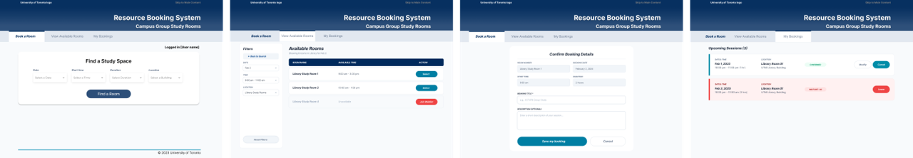
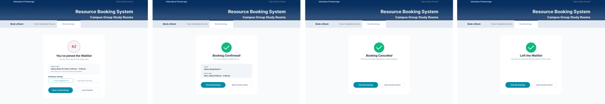

The UofT Resource Booking System is a critical tool for thousands of students, but its interface design has become outdated and is quite difficult to use. This project applied Don Norman’s design principles and Nielsen’s usability heuristics to rebuild the system from the ground up.
Heuristic analysis allowed me to identify several usability barriers, specifically the heavy cognitive load of manual searching and selection-reset bugs . Leading a design team of three, I re-engineered the interface from a static grid into a requirements-driven recommendation system.
Heuristic evaluations and user testing identified three critical pain points that made the original system "frustrating and inefficient":
Availability was presented in a static table, forcing users to scan manually for avaliable rooms.
Switching between campus buildings reset the date to the current day, forcing users to repeatedly re-enter search criteria.
Primary buttons were too small to be easily noticed.
To address the identified pain points. I developed a series of mid-fidelity wireframes. These wireframes focused on automating the search process.
With the mid-fidelity prototype ready, we conducted A/B testing involving 16 participants across 5 testing groups. The sessions focused on comparing the legacy interface with our redesigned flow to measure efficiency and clarity. Some valuable insights were found in the testing:
A significant majority of testers (4/5 groups) found that using the filter-based search was far more intuitive than manually scanning the original static table.
We introduced a new "Waitlist" feature to manage peak-hour demand; however, the specific button phrasing caused confusion for 3 out of 5 testing groups.
Quantitative data confirmed that the redesigned flow significantly reduced task completion time, saving an average of 53.8 seconds compared to the legacy system.
Guided by A/B testing insights, I iterated on the design once more and successfully delivered the definitive version of the UofT Resource Booking System. This versionsignificantly elevates user experience and offers high-value improvements in the following areas:
Transformed the outdated, cluttered portal into a clean, contemporary interface. The redesign provides more breathing room to users by having more white spaces.
Replaced manual table scanning with smart recommendations. Users can now input their needs, and the system instantly surfaces relevant options, providing an effortless discovery process.
Resolved the critical data-reset bug by implementing persistent filters. User filter criteria and search progress now persist across different screens, eliminating the need to re-enter data.
Optimized all button labels and interactive feedback to eliminate the phrasing confusion found during A/B testing.
The redesigned end-to-end workflow streamlines the user journey from initial search to final confirmation. User testing confirmed that this optimized flow saved users an average of 53.8 seconds compared to the original system.
Drawing from Don Norman’s principles, the new design improves the visibility of system status and provides clear signifiers for user actions. The system ensures users always understand the current state of their requests.
The results from our A/B tests were definitive: 100% of testers preferred the new design.
Explore the redesign below. :)
One of my most important takeaway from this project is came from the continuous testing and iterative cycles, where I learned how to ground design decisions in empirical user data.
Another key takeaway from this experience was the value of uncovering unexpected insights through A/B testing and qualitative interviews. While my initial focus was on optimizing single-room reservations, user feedback revealed a critical need to support more complex, real-world scenarios—specifically, combining bookings across multiple rooms to cover a continuous time slot. This insight reshaped my understanding of efficiency: it is not solely about speed or simplicity, but about flexibility and adaptability in complex real life contexts. As a result, I am now more intentional in evaluating how designs perform in real life scenarios and how well they support users navigating complexity.